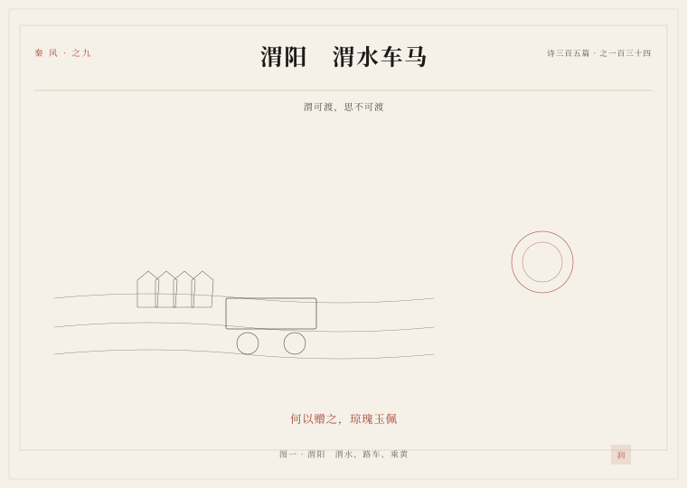
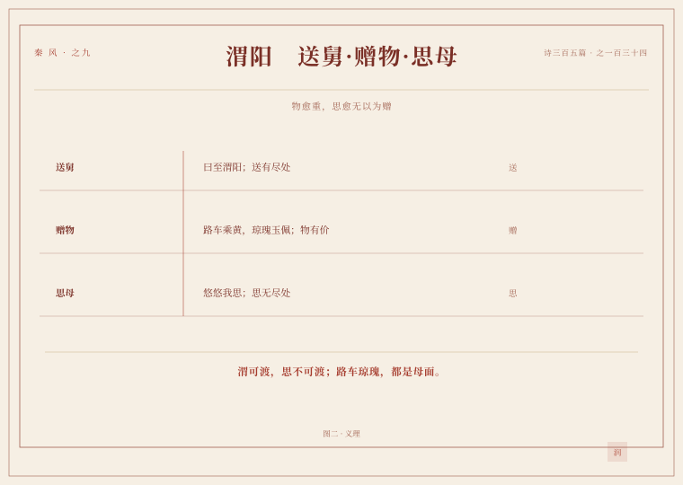

第一百三十四篇 渭阳
秦风 · 之九 SJ134
朗读 · 普通话
依经文原文朗读，章次不读出；配古琴底乐，不改速、不加拖腔。全库同一音色（豆包 TTS），非播音员录制。
一 解题
诗三判：
- 谁在说：秦康公送舅氏晋文公重耳至渭阳，念母。一送一赠，赠车赠玉，皆以物寄思。
- 说什么事：二章只换「路车乘黄／琼瑰玉佩」与「至渭阳／悠悠我思」。送有尽处，思无尽处；物有价，思无价。
- 为何编在此：承《无衣》之兵，转甥舅之亲；秦风之末，兵戈之外还有人情；一「思」字，收秦风。
《毛序》：“《渭阳》，康公念母也。康公之母，晋献公之女。文公遭丽姬之难，未反，而秦姬卒。穆公纳文公。康公时为太子，赠送文公于渭之阳，念母之不见也，我见舅氏，如母存焉。及其即位，思而作是诗也。”
朱子《诗集传》（大意）：赋也。舅氏，母之兄弟；渭阳，渭水之北；路车，诸侯之车；乘黄，四黄马；琼瑰，美玉；玉佩，玉饰。
本库的看法：《渭阳》是一首把「送」写成「思母」的诗。
送舅至渭阳，是送行；赠路车乘黄、琼瑰玉佩，是赠物。物愈重，思愈轻？不，物愈重，思愈无以为赠。
断语：渭可渡，思不可渡；路车琼瑰，都是母面。
先辨五事：「舅氏」是母之兄弟，不是舅父泛称；「渭阳」是渭水之北，不是渭阳城；「路车」是诸侯之车，不是路旁之车；「乘黄」是四匹黄马，不是乘黄马；「琼瑰」是美玉，不是琼花。
二 经文
第一章
我送舅氏，曰至渭阳。
何以赠之，路车乘黄。
第二章
我送舅氏，悠悠我思。
何以赠之，琼瑰玉佩。
分章：二章，章四句。
三 韵读
- 一章：氏、阳、黄，阳部。一韵开阔，送行之远。
- 二章：氏、思、佩，之部。转之，思声绵长。
读法：二章以昔形今，韵随叹转；昔愈厚，今愈薄。
四 字义与名物
- 舅氏：母之兄弟。曰：发语。渭阳：渭水之北。
- 路车：诸侯之车。乘黄：四匹黄马。琼瑰：美玉。玉佩：玉饰。
- 悠悠：绵长。我思：我的思念。
五 今译
我送舅氏，送到渭水之北。拿什么赠他？路车与四匹黄马。
我送舅氏，思念绵长。拿什么赠他？美玉与玉佩。
六 章旨
- 一章：写送与赠车。送到渭阳，是送之尽；路车乘黄，是赠之重。送有尽，赠有价。
- 二章：写思与赠玉。悠悠我思，是思之无尽；琼瑰玉佩，是赠之轻。思无尽，赠无价。
- 总收：车马可赠，思不可赠；二章以物起，以思收。
七 诗教
- 兴：无兴，直赋送赠；赋赠物，正是赋思母。
- 观：观甥舅之亲，不在礼，在「如母存」；一见舅，如见母。
- 群：秦晋之好，以甥舅结；一送一赠，两国之亲在一人。
- 怨：无怨，有思；思在「悠悠」，不在「不得见」。
八 分寸与边界
- 不可把「渭阳」当渭阳城。它是渭水之北；一作城，送行就成送到。
- 不可把「路车」当路旁车。它是诸侯之车；一作路旁，赠礼就轻。
- 不可把「乘黄」当一匹马。它是四匹黄马；一作一马，路车不成驾。
- 不可把此诗只读作送别。毛序有念母；一去念母，赠物就成客套。
- 不可把「琼瑰」当琼花。它是美玉；一作花，玉佩就成花佩。
九 存疑
- 诗旨：毛序康公念母；朱子从之。本库从毛朱。
- 「渭阳」：渭水之北；一说渭阳为地名。从水北。
- 「乘黄」：四黄马；一说乘黄为骏马名。从四马。
- 「琼瑰」：美玉；一说琼瑰为珠玉。从美玉。
十 跨典
- 《诗经·秦风·无衣》（SJ133）：前篇同袍，此篇赠玉；一军一亲，秦风之收。
- 《左传·僖公二十四年》：秦穆公纳晋文公；此诗背景，事与诗合。
- 《诗经·邶风·泉水》（SJ039?）：“思须与漕，我心悠悠。”——同是悠悠之思。**
十一 双卡与图
六对：
| 舅氏（母兄弟） |
舅氏（舅父泛称） |
| 渭阳（水北） |
渭阳（城） |
| 路车（诸侯车） |
路车（路旁车） |
| 乘黄（四黄马） |
乘黄（一马） |
| 琼瑰（美玉） |
琼瑰（琼花） |
| 悠悠（绵长） |
悠悠（悠闲） |

图一 · 渭阳 渭水、路车、乘黄

图二 · 渭阳 送舅、赠玉、思母
读图三处：
- 渭水：图一水三波，岸一折，路车在岸上；水可渡，思不可渡。
- 车马：图一路车一乘、黄马四匹，马只画背、首、足；车马可赠，是赠之重。
- 二章：图二「送舅／赠玉／思母」三列，末列朱线收「悠悠我思」；物愈重，思愈无以为赠。
断语：渭可渡，思不可渡；路车琼瑰，都是母面。